- Do I need to search for color codes to make sure I get the right chat?
- Can I search for the whole chat message or do I need tags to specify where to look?
- Is the chat dynamic or static?
& color codes to search for them
& sign, CT will start searching for all of the color codes so make sure you have them all matching the message
/trigger settings debug to toggle debug mode on/off
<start> will search for messages that start with what you specify
<contain> will search for messages that contain what you specify
<end> will search for messages that end with what you specify
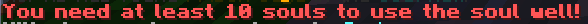
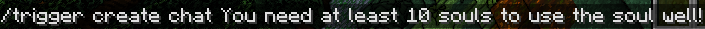
trigger - the default commandThat will return something like this
create - creating a new trigger
chat - the type of trigger
the rest - the chat for the trigger
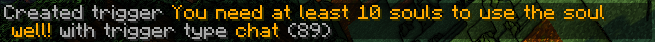
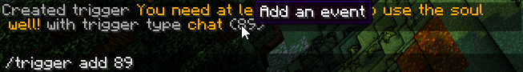
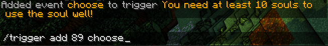
logic blockchoose will randomy choose one of the events in its block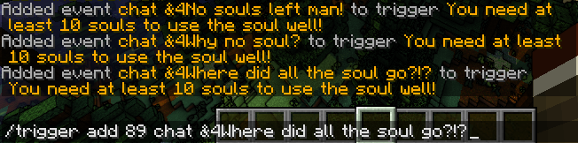
end event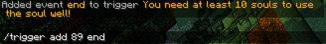
/trigger list
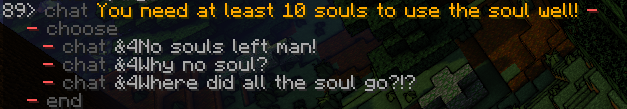
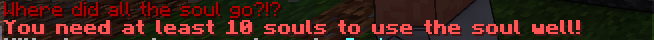
cancel event and we are good to go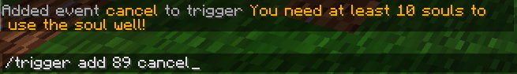
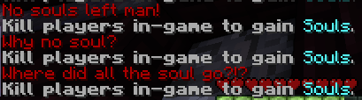
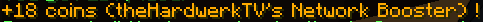
+ at the beguinning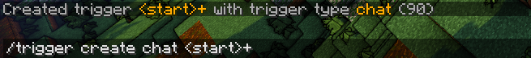
+/trigger list in the tags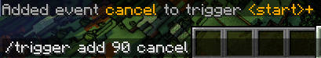
notify{msg}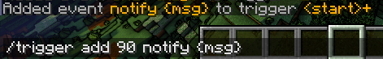
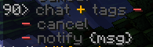
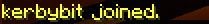
- The message always starts with a name that is one word longLooking at these two parameters, we know that we will need one string
- The message always ends with" joined."(dont forget the space)
name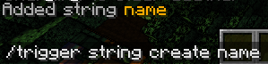
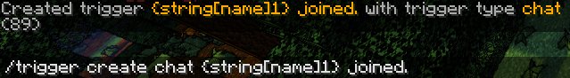
- {string[name]} - this will set our name string to whatever comes before ' joined.'Thats not too bad, right?
- {string[name]1} - this will make sure that name is one word long before setting it and running the events
- {string[name]1} joined. - this is the whole, put together trigger
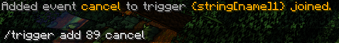
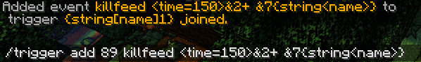
- <time=150> - the default time is set to 50. we want it to be in the killfeed for a bit longerAnd thats it! It works!
- {string<name>} - here we are reading our name string
- <time=150>&2+ &7{string<name>} - the whole event
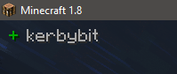